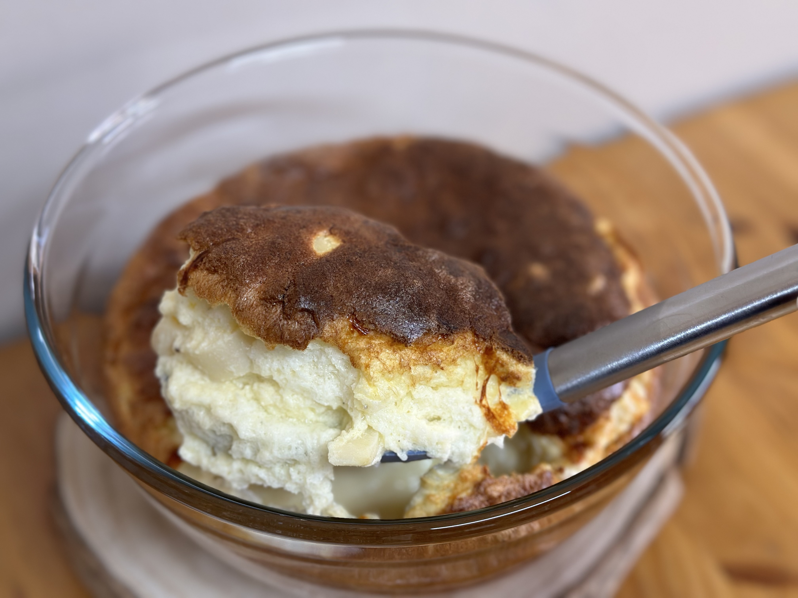

Suflê de palmito

Ingredientes
- 2 colheres (sopa) de azeite ou manteiga
- 2 colheres (sopa) de farinha de trigo
- 1 xícara (chá) de leite
- Sal e pimenta QB
- 3 ovos (gema + clara em neve)
- 3 colheres (sopa) de queijo ralado
- 2 xícaras de palmito picado
Modo de preparo
- Em uma panela, misturar o azeite, a farinha, o leite, o sal e a pimenta e levar ao fogo até engrossar, mexendo sempre.
- Retirar do fogo e juntar as gemas uma a uma, misturando bem. Acrescentar o queijo e o palmito.
- Juntar as claras em neve, misturando delicadamente.
- Colocar a massa em uma fôrma de suflê untada e levar ao forno a 180º C por aproximadamente 35 minutos. Servir logo em seguida.
Observação
Receita da mamãe (livro da Ana Maria Braga).